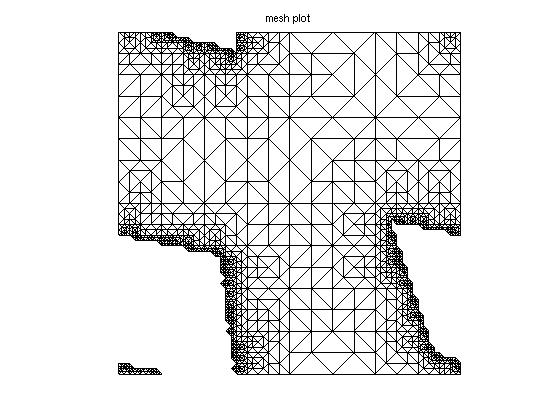
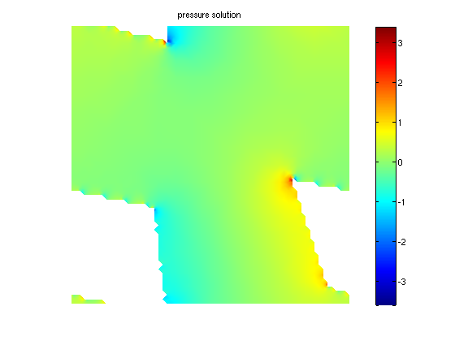
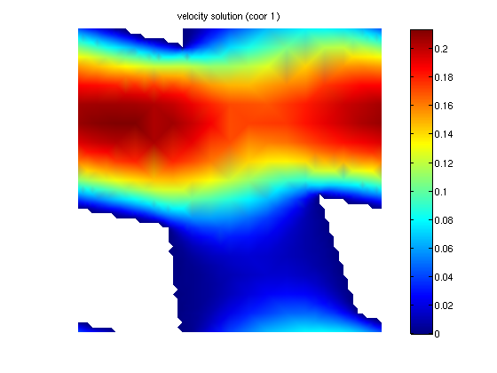
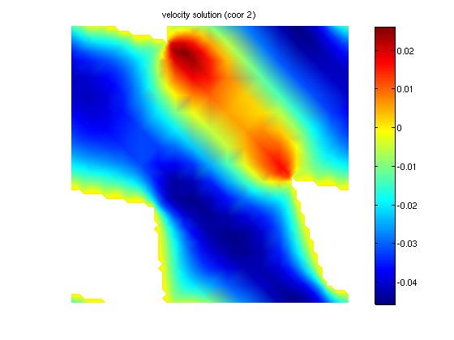
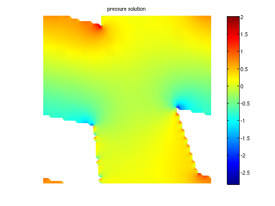
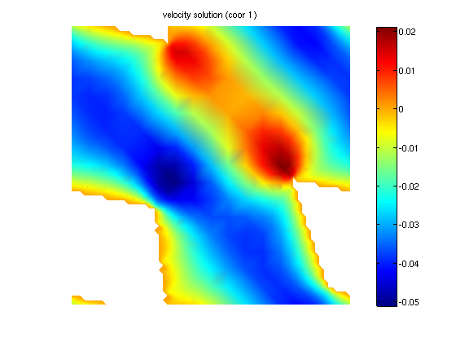
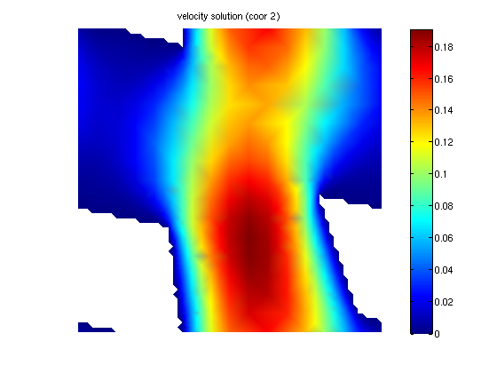

Contents
set porous geometry parameters
load('mesh2d_stokes_per_small.mat')
set variational problem
clear vp;
vp.f = @fstokesmicro;
vp.elemtype = 'p2';
vp.pelemtype = 'p1';
vp.a = 1;
vp.solver = 'uzawa';
Solve
[usol, ufemspace, psol, pfemspace, eqn] = stokes(mesh, vp);
#dof: 11131, Uzawa iter: 1, err = 1
#dof: 11131, Uzawa iter: 2, err = 0.14117391
#dof: 11131, Uzawa iter: 3, err = 0.01736056
#dof: 11131, Uzawa iter: 4, err = 0.0049276944
#dof: 11131, Uzawa iter: 5, err = 0.001778555
#dof: 11131, Uzawa iter: 6, err = 0.00073266206
#dof: 11131, Uzawa iter: 7, err = 0.00035201457
#dof: 11131, Uzawa iter: 8, err = 0.00019668187
#dof: 11131, Uzawa iter: 9, err = 0.00012139392
#dof: 11131, Uzawa iter: 10, err = 7.8727194e-05
#dof: 11131, Uzawa iter: 11, err = 5.2215167e-05
#dof: 11131, Uzawa iter: 12, err = 3.5003399e-05
#dof: 11131, Uzawa iter: 13, err = 2.360047e-05
#dof: 11131, Uzawa iter: 14, err = 1.5968631e-05
#dof: 11131, Uzawa iter: 15, err = 1.0831055e-05
#dof: 11131, Uzawa iter: 16, err = 7.3596426e-06
#dof: 11131, Uzawa iter: 17, err = 5.0078459e-06
#dof: 11131, Uzawa iter: 18, err = 3.4113879e-06
#dof: 11131, Uzawa iter: 19, err = 2.3259785e-06
#dof: 11131, Uzawa iter: 20, err = 1.587097e-06
#dof: 11131, Uzawa iter: 21, err = 1.0835959e-06
#dof: 11131, Uzawa iter: 22, err = 7.4020321e-07
#dof: 11131, Uzawa iter: 1, err = 1
#dof: 11131, Uzawa iter: 2, err = 0.16420086
#dof: 11131, Uzawa iter: 3, err = 0.018689607
#dof: 11131, Uzawa iter: 4, err = 0.0049706764
#dof: 11131, Uzawa iter: 5, err = 0.0017023582
#dof: 11131, Uzawa iter: 6, err = 0.00065485942
#dof: 11131, Uzawa iter: 7, err = 0.00028387034
#dof: 11131, Uzawa iter: 8, err = 0.00014009708
#dof: 11131, Uzawa iter: 9, err = 7.6819105e-05
#dof: 11131, Uzawa iter: 10, err = 4.4907601e-05
#dof: 11131, Uzawa iter: 11, err = 2.7133207e-05
#dof: 11131, Uzawa iter: 12, err = 1.6663642e-05
#dof: 11131, Uzawa iter: 13, err = 1.0320455e-05
#dof: 11131, Uzawa iter: 14, err = 6.4225254e-06
#dof: 11131, Uzawa iter: 15, err = 4.0091477e-06
#dof: 11131, Uzawa iter: 16, err = 2.5083769e-06
#dof: 11131, Uzawa iter: 17, err = 1.5724583e-06
#dof: 11131, Uzawa iter: 18, err = 9.8757003e-07
Plot pressure
report_stokes(mesh, vp, ufemspace, usol, pfemspace, psol);
Velocity elements: p2
Pressure elements: p1
DOF: 11131
NT = Number of Elements: 2352
N = Number of Nodes: 1285
Stokes problem solution, ID = 1.
Stokes problem solution, ID = 2.
      